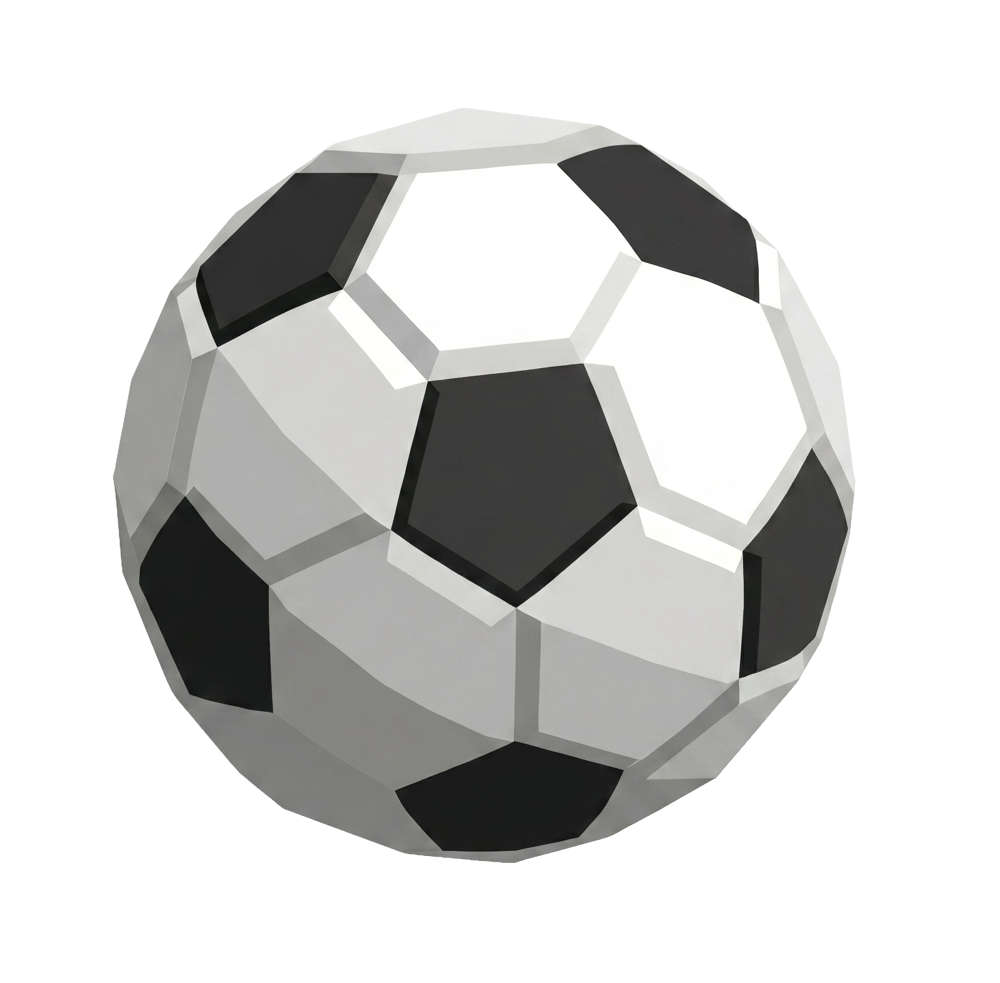
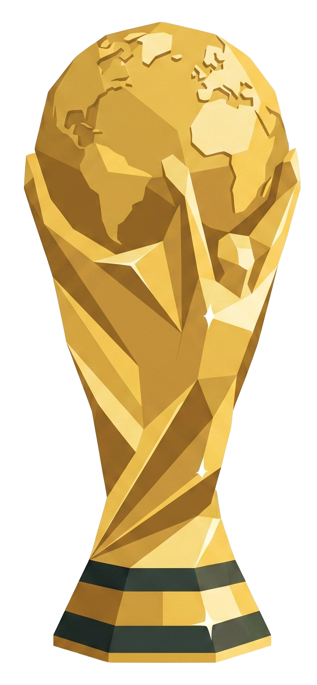

GROUP F — 第1節
🇳🇱 オランダ vs 日本 🇯🇵
- 日時
- 6/15（月）5:00 JST
- 会場
- ダラス・スタジアム（AT&T）
- 放送
- DAZN 無料 / NHK総合
2026年6月12日（金）〜 7月20日（月・祝） 史上初の48カ国・104試合。グループ分け・日程・DAZNリンク・トーナメントを1ページで。


🇯🇵 日本代表 グループF 試合日程グループF（オランダ・チュニジア・スウェーデン）／すべて日本時間
✦ F組2位通過確定 → ラウンド32（R32-4）6/30（火）2:00 JST・ヒューストンで 🇧🇷 ブラジル と対戦
A〜Lの12グループ・48カ国。★ が日本代表所属グループです。
日本時間。🇯🇵 行が日本代表の試合です。全試合DAZNでライブ配信。

決勝トーナメント| ステージ | 現地日程 | 主な会場 |
|---|---|---|
| ラウンド32（16試合） | 6/29（月）〜7/4（土） | 北米各地 初戦：SoFiスタジアム（LA） |
| ラウンド16（8試合） | 7/4（土）〜7/7（火） | ヒューストン／フィラデルフィア ほか |
| 準々決勝（4試合） | 7/9（木）〜7/11（土） | ボストン／LA／マイアミ／カンザスシティ |
| 準決勝（2試合） | 7/14（火）・7/15（水） | AT&Tスタジアム（ダラス）／アトランタ |
| 3位決定戦 | 7/18（土） | ハードロック（マイアミ） |
| 🏆 決勝 | 7/19（日）15:00 ET ＝日本時間 7/20（月・祝）4:00 | メットライフ・スタジアム（NY/NJ） |